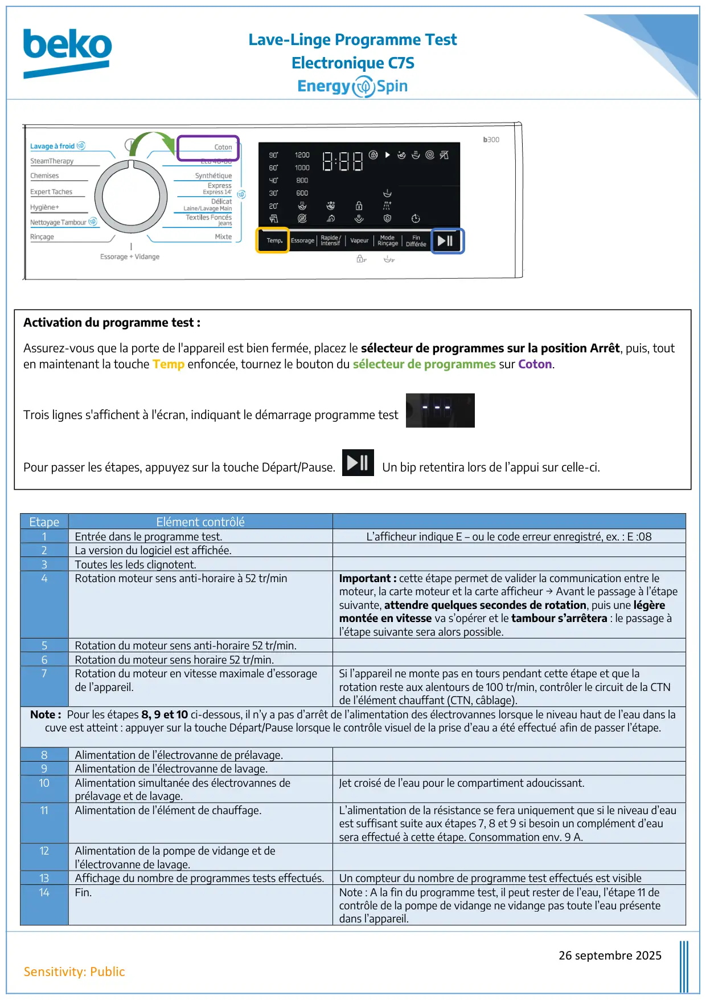
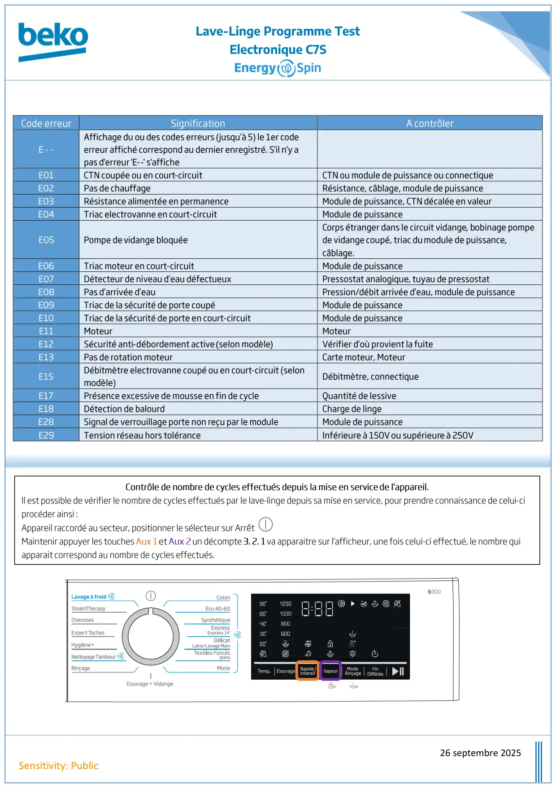

Prog Test lave linge Electronique C7S EnergySpin

Lave-Linge Programme TestElectronique C7S26 septembre 2025Sensitivity: PublicEtapeElément contrôlé1Entrée dans le programme test.L’afficheur indique E – ou le code erreur enregistré, ex. : E :082La version du logiciel est affichée.3Toutes les leds clignotent.4Rotation moteur sens anti-horaire à 52 tr/minImportant : cette étape permet de valider la communication entre lemoteur, la carte moteur et la carte afficheur → Avant le passage à l’étapesuivante, attendre quelques secondes de rotation, puis une légèremontée en vitesse va s’opérer et le tambour s’arrêtera : le passage àl’étape suivante sera alors possible.5Rotation du moteur sens anti-horaire 52 tr/min.6Rotation du moteur sens horaire 52 tr/min.7Rotation du moteur en vitesse maximale d’essoragede l’appareil.Si l’appareil ne monte pas en tours pendant cette étape et que larotation reste aux alentours de 100 tr/min, contrôler le circuit de la CTNde l’élément chauffant (CTN, câblage).Note : Pour les étapes 8, 9 et 10 ci-dessous, il n’y a pas d’arrêt de l’alimentation des électrovannes lorsque le niveau haut de l’eau dans lacuve est atteint : appuyer sur la touche Départ/Pause lorsque le contrôle visuel de la prise d’eau a été effectué afin de passer l’étape.8Alimentation de l’électrovanne de prélavage.9Alimentation de l’électrovanne de lavage.10Alimentation simultanée des électrovannes deprélavage et de lavage.Jet croisé de l’eau pour le compartiment adoucissant.11Alimentation de l’élément de chauffage.L’alimentation de la résistance se fera uniquement que si le niveau d’eauest suffisant suite aux étapes 7, 8 et 9 si besoin un complément d’eausera effectué à cette étape. Consommation env. 9 A.12Alimentation de la pompe de vidange et del’électrovanne de lavage.13Affichage du nombre de programmes tests effectués.Un compteur du nombre de programme test effectués est visible14Fin.Note : A la fin du programme test, il peut rester de l’eau, l’étape 11 decontrôle de la pompe de vidange ne vidange pas toute l’eau présentedans l’appareil.Activation du programme test :Assurez-vous que la porte de l'appareil est bien fermée, placez le sélecteur de programmes sur la position Arrêt, puis, touten maintenant la touche Temp enfoncée, tournez le bouton du sélecteur de programmes sur Coton.Trois lignes s'affichent à l'écran, indiquant le démarrage programme testPour passer les étapes, appuyez sur la touche Départ/Pause. Un bip retentira lors de l’appui sur celle-ci.
1 / 2
Lave-Linge Programme TestElectronique C7S26 septembre 2025Sensitivity: Public
2 / 2